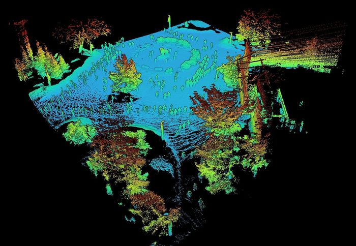
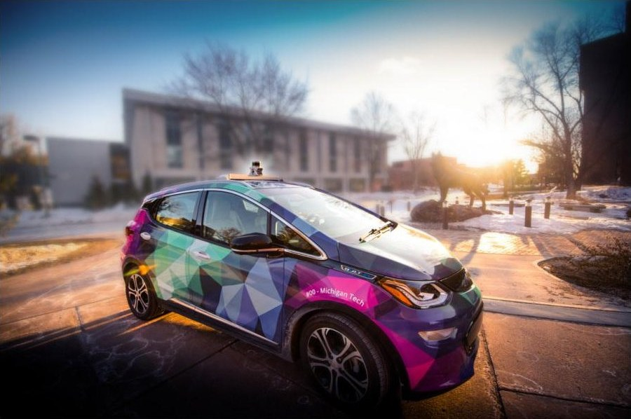
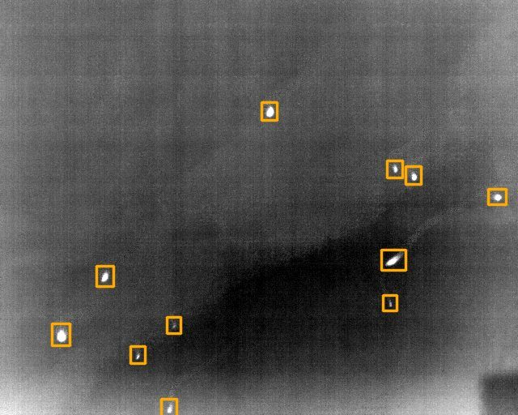

Autonomy in winter weather
How snow, ice, and cold change what autonomous vehicles can sense and how they should drive, from lidar clutter to control on low-friction surfaces.
Michigan Technological University · Electrical & Computer Engineering
We build autonomy, perception, and optical sensing at the End of the Earth.

How snow, ice, and cold change what autonomous vehicles can sense and how they should drive, from lidar clutter to control on low-friction surfaces.
Measuring lidar range error and uncertainty, benchmarking automotive sensors, and making perception work in degraded conditions.
Terrain assessment, point-cloud path planning, and multi-robot coordination for ground vehicles in unstructured environments.
Optical turbulence, imaging through the atmosphere, beam control, and free-space and underwater optical communication.


White-nose syndrome has killed millions of bats in North America. To help fight it, we are using sensors developed for autonomous vehicles (thermal, near-infrared, and color cameras) to count hibernating bats and map where they roost inside mines. One theory is that bats prefer colder parts of a mine, where white-nose syndrome is less likely to take hold. Knowing exactly where they roost lets us test that idea.
How much can you trust a lidar range measurement, and how does that change in rain, snow, or fog? We are building tools for automotive lidar metrology: a Python application that extracts points on planar targets from recorded scans, trims noisy edge returns with iteratively reweighted least squares, and reports the repeatability (Type A uncertainty) of each sensor. Next, we will compare those baselines against data taken in adverse weather.
EE5531 Introduction to Robotics is a hands-on course built on ROS 2 with TurtleBot3 and Clearpath robots. Interactive tools from the course:
Associate Professor of Electrical and Computer Engineering at Michigan Tech and SPIE Fellow. Before joining Michigan Tech in 2015, he was a National Research Council postdoctoral fellow and Directed Energy Scholar at the Air Force Research Laboratory in Maui. Earlier, he worked in aerospace and automotive industry as an antenna engineer at Lockheed Martin, an RF engineer and EMC/RF test lab manager at Johnson Controls, and a global product development lead for short-range wireless systems at General Motors.